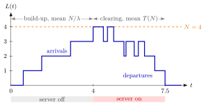

N-Policy¶
Definition¶
Consider an queue: jobs arrive as a Poisson process with rate , service times are iid with finite and , there is one server, and the load . Under an -policy with integer threshold , the server switches off as soon as the system becomes empty and stays off until jobs are present; it then switches on and serves until the system is empty again.
Each switch-on costs a setup cost , and every job in the system costs per unit of time. A cycle starts when the server switches off. It consists of a build-up phase, in which inter-arrival times pass, and a clearing phase, which lasts , where denotes the expected time to empty the system once the server starts on the first of jobs present. The expected cycle length is therefore
Interpretation¶
An -policy lets work pile up on purpose. Starting the server is expensive, so the server waits until a batch of jobs is ready and then clears them in one run; a larger means fewer setups per hour but longer queues.

The figure draws one cycle of Example 1 ( job per hour, hour, ). While the server is off, only rises; at the fourth arrival, time , the server switches on, and drops at a departure every half hour and rises at three more arrivals until the system empties at time . The expected phases are and hours, and the waiting cost of a cycle is times the area under the path.
The clearing time follows from a first-step argument: with the number of arrivals during one service, and . Since by Adam's law, the solution is mean busy periods. It is finite only because ; then the queue is rate stable for every , and the utilization stays , because changes when work is done, not how much. Dividing the expected cycle cost by is the renewal reward theorem.
With and the cost with is of the Pollaczek–Khinchine formula, and has the square-root form of the EOQ and EPQ formulas. A common slip is to let depend on the service variability : the cost does, does not. Server setups in Week 6 revisit this trade-off.
Key Results¶
- Clearing time: with , the unique solution of , , with ; equivalently with the mean busy period .
- Cycle length: , so the number of setups per unit time is .
- Cost during one service with jobs present: ; cost to clear jobs: ; cost of the build-up phase: (here is a cost; below is the waiting time in queue).
- Long-run average cost, from the renewal reward theorem:
- Treating as continuous and rounding, . It depends on , , and , but not on .
- With and (optimal when ) and , the average cost equals , the Pollaczek–Khinchine formula.
- The utilization is for every , and the queue is rate stable for every when .
Examples¶
1. Choosing . Let job per hour, hour (so , ), per job per hour and . Then . The average cost is , so , and : is optimal. The cycle lasts hours, so the setup cost rate is .
2. Clearing time from the recursion. In Example 1, . Substituting in gives , so and : clearing four jobs takes hours on average. A queue with the same rates drains at job per hour and also needs hours, as TF 5.6.2 claims.
3. Variability changes the cost, not . Keep Example 1 but make the service times exponential with mean , so . The first cost term becomes instead of , so . This term does not contain , so is unchanged; lowering because service is more variable would only raise the setup cost.
4. Recovering Pollaczek–Khinchine. With , and in the queue of Example 1, the cost is . The first term is , so hour, which matches .
Prerequisites¶
Related Concepts¶
- Server Setup
- Hitting-Time Recursion
- Economic Production Quantity
- Rate Stability
- Server Utilization
- Setup Cost
- Economic Order Quantity
Sources¶
- Stochastic Operations Research · Week 5
- N. D. van Foreest, Sample Path Analysis and Simulation of Stochastic Systems, Section 5.6
Aliases: N policy, N-policy for the M/G/1 queue, M/G/1 queue under an N-policy, switch-on threshold policy, removable server Keywords: N^, optimal N, N^ = \sqrt{2\lambda(1-\rho)K/h}, T(q) = q E[S]/(1-\rho), clearing time, setup cost K, holding cost h, cycle cost, build-up phase, server switched off Symbols: lambda, mu, rho, square root
Last updated: 29 October 2026 20:42
N-PolicyHitting-Time RecursionBusy PeriodRenewal Reward TheoremPollaczek-Khinchine FormulaAdam’s Law: Total ExpectationServer SetupEconomic Production QuantityRate StabilityServer UtilizationSetup CostEconomic Order Quantity